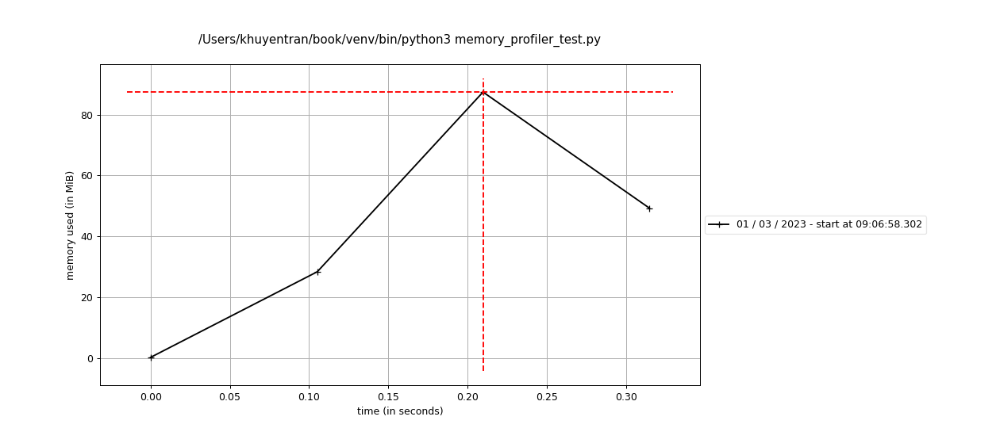

7.3. Code Review#
This section covers some tools to automatically review and improve your code such as sorting imports, checking for missing docstrings, etc.
7.3.1. isort: Automatically Sort your Python Imports in 1 Line of Code#
As your codebase expands, you may find yourself importing numerous libraries, which can become overwhelming to navigate. To avoid arranging your imports manually, use isort.
isort is a Python library that automatically sorts imports alphabetically, grouping them by section and type.
Consider the following example where your imports are unsorted:
from sklearn.metrics import confusion_matrix, fl_score, classification_report, roc_curve
from sklearn.model_selection import train_test_split
from sklearn.model_selection import GridSearchCV, StratifiedKFold
from sklearn import svm
from sklearn.naive_bayes import GaussianNB, MultinomialNB
from sklearn.neighbors import KNeighborsClassifier
from sklearn.tree import DecisionTreeClassifier
from sklearn.model_selection import TimeSeriesSplit
By running isort name_of_your_file.py, isort can sort your imports automatically into the following:
from sklearn import svm
from sklearn.metrics import (classification_report, confusion_matrix, fl_score,
roc_curve)
from sklearn.model_selection import (GridSearchCV, StratifiedKFold,
TimeSeriesSplit, train_test_split)
from sklearn.naive_bayes import GaussianNB, MultinomialNB
from sklearn.neighbors import KNeighborsClassifier
from sklearn.tree import DecisionTreeClassifier
You can use isort with pre-commit by adding the following to your .pre-commit-config.yaml file:
- repo: https://github.com/timothycrosley/isort
rev: 5.12.0
hooks:
- id: isort
7.3.2. interrogate: Check your Python Code for Missing Docstrings#
Show code cell content
!pip install interrogate
Sometimes, you might forget to include docstrings for classes and functions. Instead of manually searching through all your functions and classes for missing docstrings, use interrogate.
Consider the following example where there are missing docstrings:
%%writefile interrogate_example.py
class Math:
def __init__(self, num) -> None:
self.num = num
def plus_two(self):
"""Add 2"""
return self.num + 2
def multiply_three(self):
return self.num * 3
Writing interrogate_example.py
You can use interrogate to identify missing docstrings:
interrogate interrogate_example.py
Output:
Show code cell source
!interrogate interrogate_example.py
RESULT: FAILED (minimum: 80.0%, actual: 20.0%)
You can use interrogate with pre-commit by adding the following to your .pre-commit-config.yaml file:
- repo: https://github.com/pre-commit/mirrors-interrogate
rev: v1.4.0
hooks:
- id: interrogate
7.3.3. mypy: Static Type Checker for Python#
Show code cell content
!pip install mypy
Type hinting in Python is useful for other developers to understand the expected data types to be used in your functions. To automate type checking in your code, use mypy.
Consider the following file that includes type hinting:
%%writefile mypy_example.py
from typing import List, Union
def get_name_price(fruits: list) -> Union[list, tuple]:
return zip(*fruits)
fruits = [('apple', 2), ('orange', 3), ('grape', 2)]
names, prices = get_name_price(fruits)
print(names) # ('apple', 'orange', 'grape')
print(prices) # (2, 3, 2)
Writing mypy_example.py
When typing the following command on your terminal:
mypy mypy_example.py
you will get the output similar to this:
mypy_example.py:4: error: Incompatible return value type (got "zip[Any]", expected "Union[List[Any], Tuple[Any, ...]]")
Found 1 error in 1 file (checked 1 source file)
You can use mypy with pre-commit by adding the following to your .pre-commit-config.yaml file:
repos:
- repo: https://github.com/pre-commit/mirrors-mypy
rev: v0.910
hooks:
- id: mypy
7.3.4. Refurb: Refurbish and Modernize Python Codebases#
If you want to have some guidelines to improve and optimize your code, try Refurb.
For example, if you have a file like this:
%%writefile test_refurb.py
for n in [1, 2, 3, 4]:
if n == 2 or n == 4:
res = n/2
Overwriting test_refurb.py
You can use Refurb to refurbish your code.
$ refurb test_refurb.py
test_refurb.py:1:10 [FURB109]: Replace `in [x, y, z]` with `in (x, y, z)`
test_refurb.py:2:8 [FURB108]: Use `x in (y, z)` instead of `x == y or x == z`
Run `refurb --explain ERR` to further explain an error. Use `--quiet` to silence this message
$ refurb test_refurb.py --explain FURB109
['Since tuple, list, and set literals can be used with the `in` operator, it',
'is best to pick one and stick with it.',
'',
'Bad:',
'',
'```',
'for x in [1, 2, 3]:',
' pass',
'',
'nums = [str(x) for x in [1, 2, 3]]',
'```',
'',
'Good:',
'',
'```',
'for x in (1, 2, 3):',
' pass',
'',
'nums = [str(x) for x in (1, 2, 3)]',
'```']
Refurb only works with Python 3.10 and above.
You can use Refurb with pre-commit by adding the following to your .pre-commit-config.yaml file:
repos:
- repo: https://github.com/dosisod/refurb
rev: REVISION
hooks:
- id: refurb
7.3.5. eradicate: Remove Junk Comments from Python Files#
Show code cell content
!pip install eradicate
Outdated or unused code left as comments in Python files can clutter codebases, making them harder to read and maintain.
Eradicate solves this by automatically identifying and removing commented-out code from Python files.
Let’s see eradicate in action:
Example Python file:
%%writefile eradicate_test.py
# from math import *
def mean(nums: list):
# print(nums)
# TODO: check if nums is empty
# Return mean
return sum(nums) / len(nums)
# nums = [0, 1]
nums = [1, 2, 3]
mean(nums)
Writing eradicate_test.py
Preview changes:
$ eradicate eradicate_test.py
--- before/eradicate_test.py
+++ after/eradicate_test.py
@@ -1,11 +1,8 @@
-# from math import *
def mean(nums: list):
- # print(nums)
# TODO: check if nums is empty
# Return mean
return sum(nums) / len(nums)
-# nums = [0, 1]
nums = [1, 2, 3]
mean(nums)
Apply changes:
$ eradicate eradicate_test.py -i
Results:
def mean(nums: list):
# TODO: check if nums is empty
# Return mean
return sum(nums) / len(nums)
nums = [1, 2, 3]
mean(nums)
In this example, eradicate removes:
The commented-out import statement
# from math import *The commented-out debug print statement
# print(nums)The commented-out variable assignment
# nums = [0, 1]
However, it preserves the meaningful comments:
The TODO comment
# TODO: check if nums is emptyThe descriptive comment
# Return mean
This cleanup improves the code’s readability by removing distracting, unused code comments while keeping important notes for developers.
You can use eradicate with pre-commit by adding the following to your .pre-commit-config.yaml file:
repos:
- repo: https://github.com/wemake-services/eradicate/
rev: v2.2.0
hooks:
- id: eradicate
7.3.6. Pydantic: Enforce Data Types on Your Function Parameters at Runtime#
Show code cell content
!pip install pydantic
To enforce data types and validate function parameters at runtime, use Pydantic.
Pydantic will attempt to convert values to the correct data type. If the conversion fails, it raises a ValidationError.
from pydantic import BaseModel
import pandas as pd
class SplitConfig(BaseModel):
test_size: float = 0.3
random_state: int = 1
def split_data(data: pd.DataFrame, config: SplitConfig = SplitConfig()):
test_size = config.test_size
random_state = config.random_state
...
split_data(SplitConfig(random_state=1.0))
# --> 1 (int)
split_data(SplitConfig(random_state="a"))
---------------------------------------------------------------------------
ValidationError Traceback (most recent call last)
Cell In[12], line 1
----> 1 split_data(SplitConfig(random_state="a"))
File ~/book/venv/lib/python3.9/site-packages/pydantic/main.py:341, in pydantic.main.BaseModel.__init__()
ValidationError: 1 validation error for SplitConfig
random_state
value is not a valid integer (type=type_error.integer)
Build a full-stack ML application with Pydantic and Prefect.
7.3.7. perfplot: Performance Analysis for Python Snippets#
Show code cell content
!pip install perfplot
If you want to compare the performance between different snippets and plot the results, use perfplot.
import perfplot
def append(n):
l = []
for i in range(n):
l.append(i)
return l
def comprehension(n):
return [i for i in range(n)]
def list_range(n):
return list(range(n))
perfplot.show(
setup=lambda n: n,
kernels=[
append,
comprehension,
list_range,
],
n_range=[2**k for k in range(25)],
)
7.3.8. Analyze the Memory Usage of Your Python Code#
Show code cell content
!pip install memory_profiler
If you want to analyze the memory consumption of your Python code line-by-line, use memory_profiler. This package allows you to generate a full memory usage report of your executable and plot it.
%%writefile memory_profiler_test.py
from memory_profiler import profile
@profile
def func():
a = [1] * (10 ** 6)
b = [2] * (2 * 10 ** 7)
del b
return a
if __name__ == "__main__":
func()
Writing memory_profiler_test.py
$ mprof run memory_profiler_test.py
mprof: Sampling memory every 0.1s
running new process
running as a Python program...
Filename: memory_profiler_test.py
Line # Mem usage Increment Occurrences Line Contents
=============================================================
4 41.9 MiB 41.9 MiB 1 @profile
5 def func():
6 49.5 MiB 7.6 MiB 1 a = [1] * (10 ** 6)
7 202.1 MiB 152.6 MiB 1 b = [2] * (2 * 10 ** 7)
8 49.5 MiB -152.6 MiB 1 del b
9 49.5 MiB 0.0 MiB 1 return a
Plot the memory usage:
$ mprof plot

7.3.9. Vulture: Automatically Find Dead Python Code#
Show code cell content
!pip install vulture
Unused code poses multiple issues, including:
Increased difficulty in comprehending the code.
Challenges in debugging and testing.
Unnecessary consumption of memory and resources.
To automatically remove unused Python code, use Vulture.
%%writefile dead_code.py
# Unused Imports
import pandas as pd
import numpy as np
class DataProcessor:
def __init__(self, data):
self.data = data
def clean_data(self):
# Unused Variables
how = 'all'
inplace = True
# Data cleaning logic here
self.data = self.data.dropna(how='any', inplace=False)
def get_mean(self):
# This method is defined but not used in the class
return self.data.mean()
if __name__ == "__main__":
data = pd.DataFrame({'A': [1, 2, None, 4]})
processor = DataProcessor(data)
processor.clean_data()
$ vulture dead_code.py
dead_code.py:3: unused import 'np' (90% confidence)
dead_code.py:11: unused variable 'how' (60% confidence)
dead_code.py:12: unused variable 'inplace' (60% confidence)
dead_code.py:17: unused method 'get_mean' (60% confidence)
You can use Vulture with pre-commit by adding the following to your .pre-commit-config.yaml file:
repos:
- repo: https://github.com/jendrikseipp/vulture
rev: 'v2.3' # or any later Vulture version
hooks:
- id: vulture